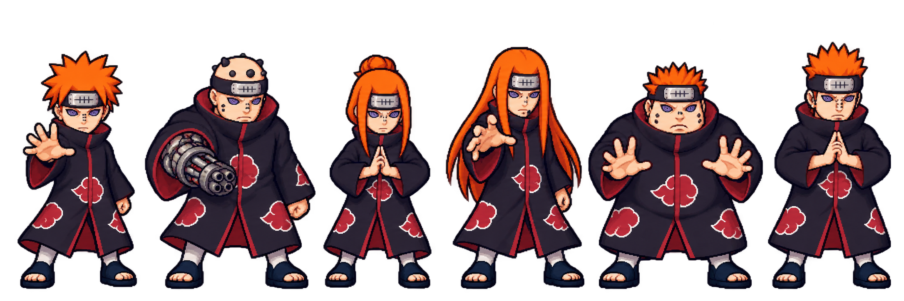

NARUTO · CHARACTER CONCEPT 02
沛恩六道
操控天道，五道協同。以引力改變敵人的位置，用機械、通靈與支援接管戰場。

玩家本體 · 引斥控場
天道
掌控敵人的進退；近身有威脅時先斥開，保持施術與走位的空間。
黑棒連射／萬象天引・神羅天征／地爆天星
動作與戰鬥節奏
Lv.1 黑棒普攻常駐；Lv.3 收掌拉近後張掌斥開；Lv.15 托起黑核，以碎石聚攏再崩落。施術中仍可走位。
天道倒下即結束。距離 80 內有敵人時不再拉怪，直接使用斥力；沒有額外無敵。六個身體，各有職責
五道各有耐久、倒下與復歸。五種主動只執行目前選中的招式；吸收與修復學會後自動運作。
看到的動作，就是真實事件
飛彈從機械臂離架，犀牛真的衝過敵群，抓取必須貼近。塵環與碎石標示實際作用範圍。
保留六道的唯一身分
數量卡增加黑棒與飛彈。分身共用五道支援，不另外複製整隊；傷害與冷卻仍需後續實玩調校。